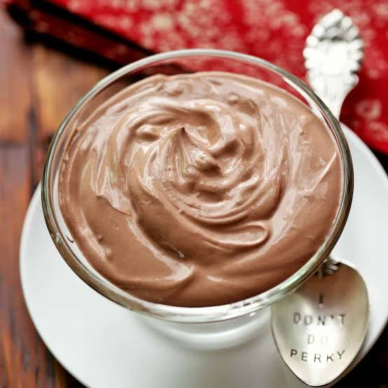

Choco Greek Yoghurt

Description
A rich, creamy, and protein-packed snack made with real dark chocolate that chills into a decadent, dessert-like treat.
Ingredients
- Plain Greek yogurt (desired amount)
- 2-3 squares of dark chocolate
Steps:
- Place the 2 squares of dark chocolate in a small bowl and melt them slightly (either in the microwave for a few seconds).
- Scoop your desired amount of plain Greek yogurt directly into the melted chocolate.
- Mix the yogurt and chocolate together thoroughly until well combined.
- Pop the bowl into the refrigerator for about 10 minutes to let it chill and set before eating.
Homepage
Click here to check out my delicious Smoky Jollof recipe or Here for a Chicken Wrap recipe